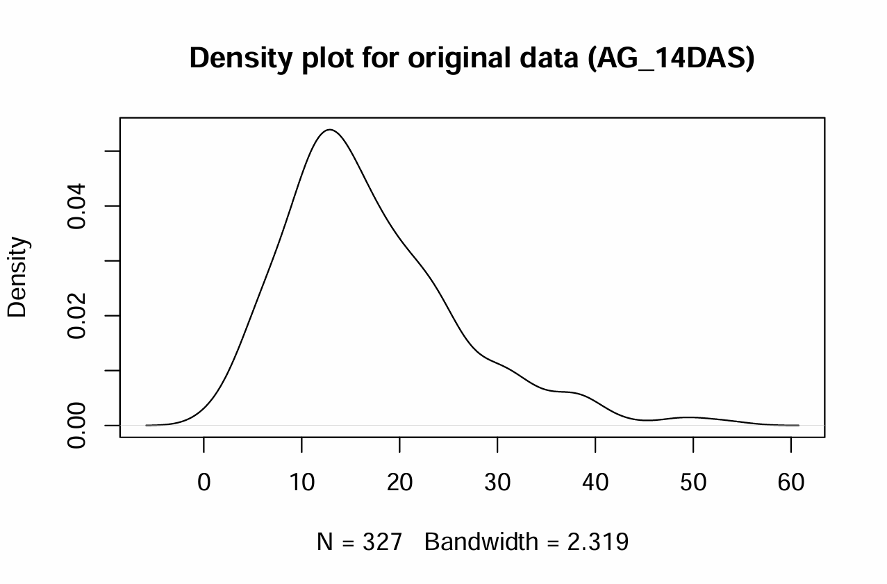
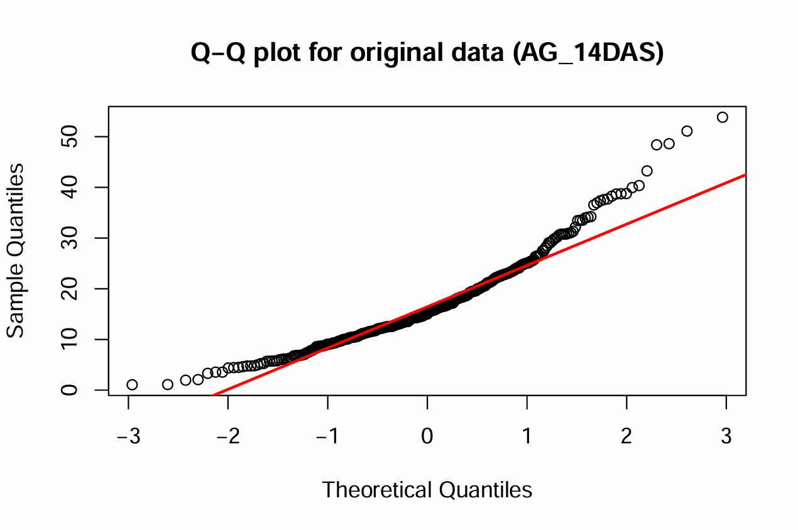
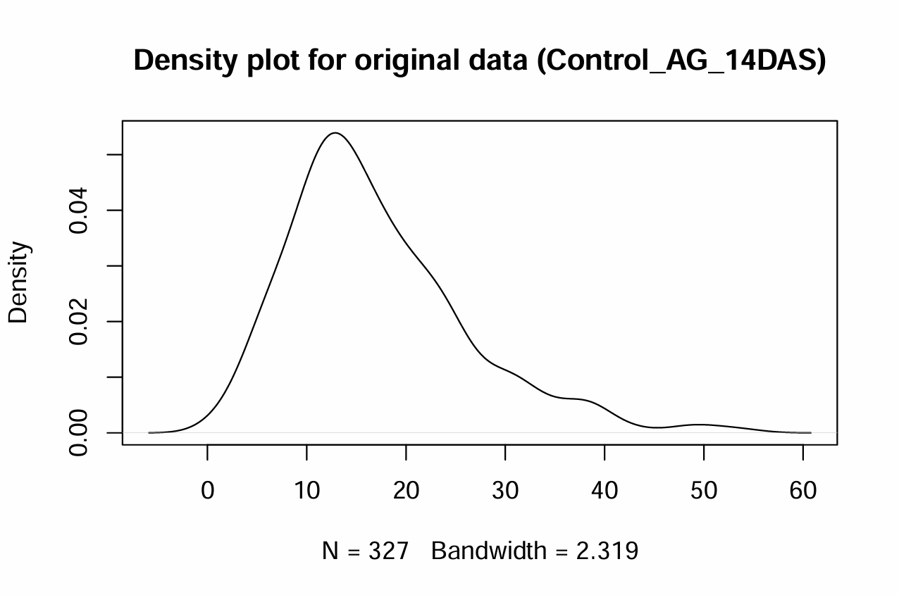
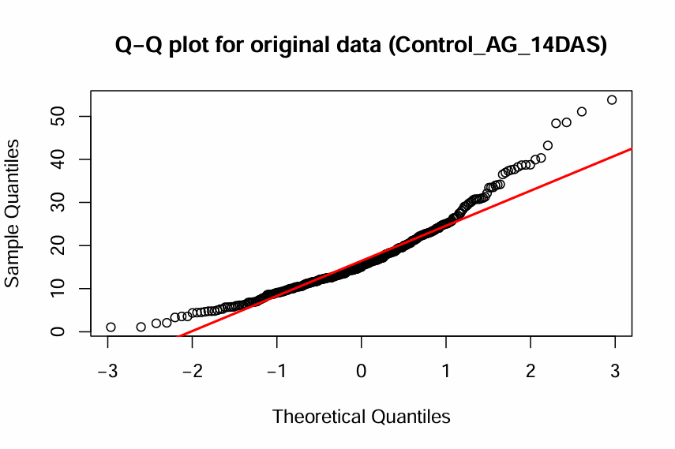
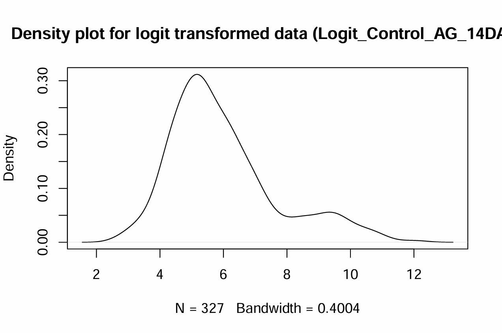
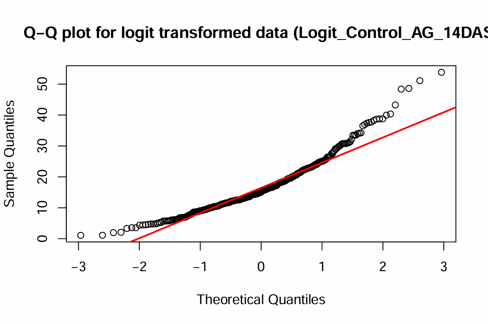
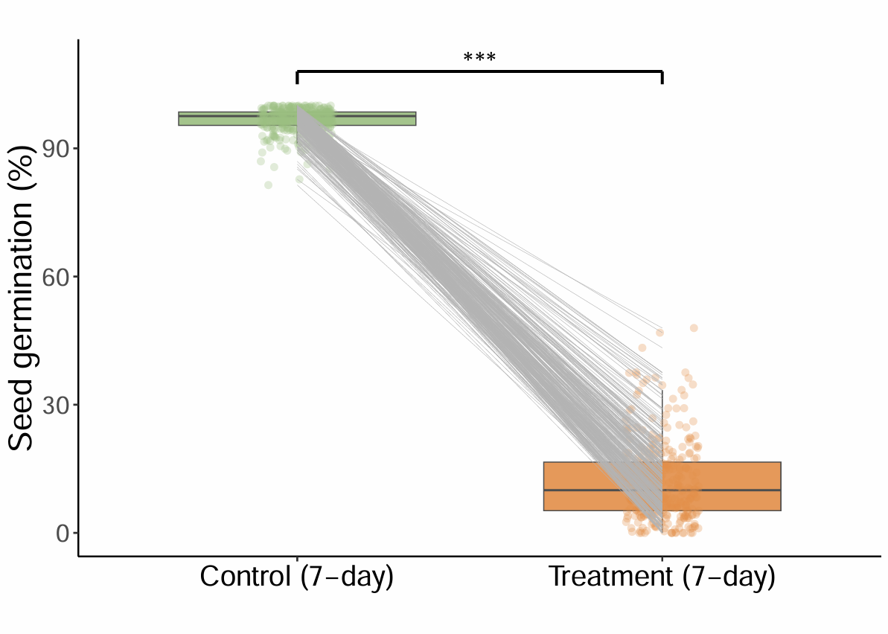
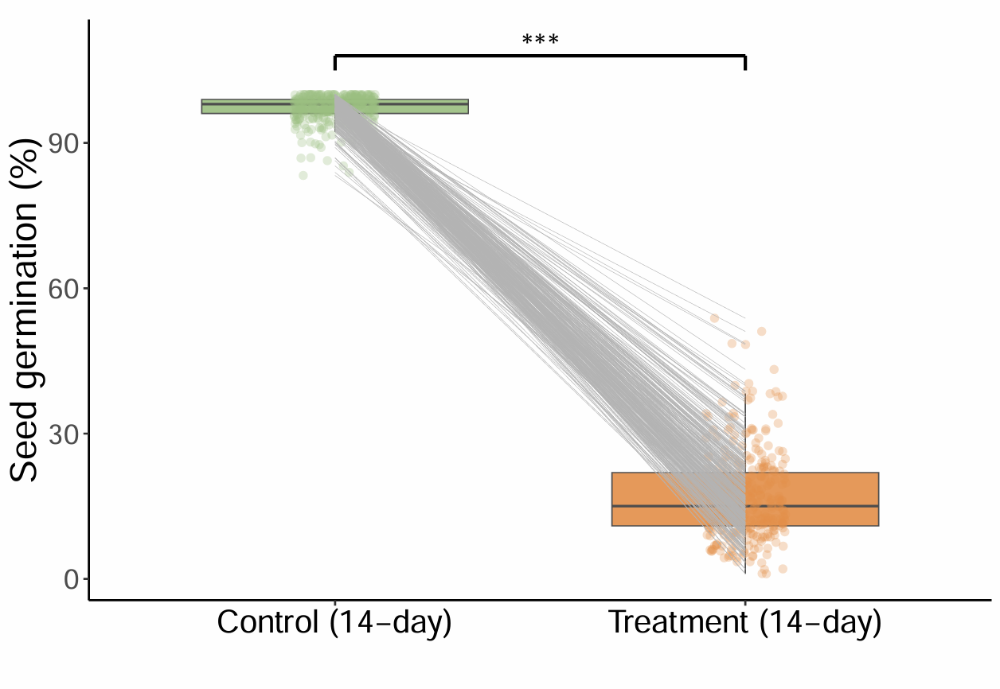
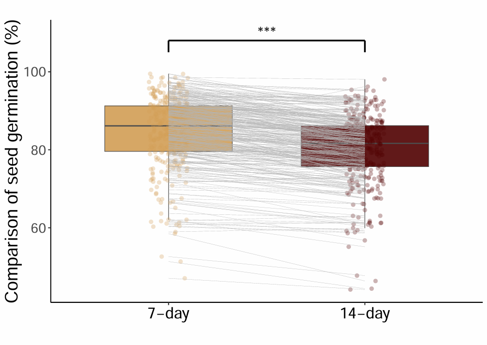

2 Phenotype Data
In this chapter, we explore the phenotypic data that will be used alongside the genotypic data for GWAS. We start by examining descriptive statistics, identifying difference, and implementing transformation to handle non-normal data. We then finalize the phenotype dataset by selecting three traits. The outcome is a curated phenotypic dataset, ready for integration with the genotype data in subsequent analyses.
Phenotypic Data Processing
Phenotypic Data Visualization
Prepare Final Phenotypic Data
2.1 Phenotypic Data Processing
We aim to process and clean phenotypic data for a dataset called Pheno_327_ranked. This dataset contains measurements of various phenotypic traits collected under different experimental conditions, including controls and treatments at specified time intervals (e.g., 5, 7, and 14 days under control or treatment).
We focus on exploring and transforming phenotypic data to achieve
normality, which is essential for many statistical analyses, including
GWAS. The dataset being processed (i.e. logit transformation) contains
phenotypic measurements, specifically the variable Control_AG_14DAS,
representing the difference between control and treatment phenotypes at
14 days after sowing.
R ➡️ Explore Phenotypic Data
##### R CODES #####
# Set the working directory
setwd("...your file path...")
# Load the phenotype data
Pheno_data = read.csv("Pheno_327_ranked.csv")
# Check normality of the original data
data = Pheno_data$AG.14
shapiro.test(data)
summary(data)
# Calculate skewness to assess data symmetry
library(moments)
skewness(data)
# Negative (positive) skewness indicates a left (right) skew
# Plot the density of the original data
plot(density(data), main = "Density plot for original data (Control_AG_14DAS)")
# Create a Q-Q plot to visually check normality of the original data
qqnorm(data, main = "Q-Q plot for original data (Control_AG_14DAS)")
qqline(data, col = "red", lwd = 2)
# Apply logit transformation to normalize the data
# The logit transformation is commonly used to transform probabilities (values between 0 and 1) into the real number line.
logit = function(p) {
epsilon = 3e-4
p = ifelse(p == 0, epsilon, ifelse(p == 1, 1 - epsilon, p))
log(p / (1 - p))
}
# AG under 14 days
data_AG_14 = logit(Pheno_data$AG.14/100)
data_Control_14 = logit(Pheno_data$N.14/100)
Logit_Control_AG_14DAS = data_Control_14 - data_AG_14
shapiro.test(Logit_Control_AG_14DAS)
skewness(Logit_Control_AG_14DAS)
plot(density(Logit_Control_AG_14DAS), main="Density plot for logit transformed data (Logit_Control_AG_14DAS)")
qqnorm(data, main = "Q-Q plot for logit transformed data (Logit_Control_AG_14DAS)")
qqline(data, col = "red", lwd = 2)-
AG_14DAS:
 -
Control_AG_14DAS:
 -
Logit_Control_AG_14DAS:

We use the logit-transformed data (Logit_Control_AG_14DAS) along with the original data (AG_14DAS & Control_AG_14DAS) for GWAS analysis.
2.2 Phenotypic Data Visualization
We aim to analyze and visualize seed germination data under various experimental conditions. This analysis is centered around comparing control and treatment groups at different time points (7 and 14 days) to assess the effects of treatments on seed germination rates.
Welch’s t-tests are conducted to compare seed germination rates between:
Control and treatment groups at 7 days.
Control and treatment groups at 14 days.
Comparison of seed germination at 7 days versus 14 days.
R ➡️ Phenotypic Data Visualization
##### R CODES #####
# Set the working directory
setwd("...your file path...")
# Load the phenotype data
Pheno_data = read.csv("Pheno_327_ranked.csv")
# Load ggplot2 library for data visualization
library(ggplot2)
# Seed germination analysis: Control vs Treatment (7-day)
Group1 = Pheno_data$N.7
Group2 = Pheno_data$AG.7
# Perform Welch Two Sample t-test
t.test(Group1, Group2) # p-value < 2.2e-16
# Create a data frame for visualization
ID = Pheno_data$DNA_ID
data = data.frame(
value = c(Group1, Group2),
group = rep(c("Control_7", "Treatment_7"), each = length(Group1)),
id = rep(ID, 2))
# Generate boxplot and jitter plot for 7-day seed germination
ggplot(data, aes(x = group, y = value, group = group)) +
geom_boxplot(aes(fill = group), color = "grey30", width = 0.65, size = 0.3, alpha = 0.9, outlier.shape = NA) +
geom_jitter(width = 0.1, aes(color = group), size = 1.5, alpha = 0.3) +
geom_line(aes(group = id), color = "grey70", size = 0.1) +
theme_classic() +
labs(title = "", x = "", y = "Seed germination (%)") +
theme(
axis.title.x = element_text(size = 18),
axis.title.y = element_text(size = 18),
axis.text.x = element_text(size = 16, color = "black"),
axis.text.y = element_text(size = 14),
legend.position = "none") +
scale_fill_manual(values = c("Control_7" = "#9ABF80", "Treatment_7" = "#E38E49")) +
scale_color_manual(values = c("Control_7" = "#9ABF80", "Treatment_7" = "#E38E49")) +
scale_x_discrete(labels = c("Control_7" = "Control (7-day)", "Treatment_7" = "Treatment (7-day)")) +
annotate("segment", x = 1, xend = 2, y = 108, yend = 108, linewidth = 0.8, color = "black") +
annotate("segment", x = 1, xend = 1, y = 108, yend = 105, linewidth = 0.8, color = "black") +
annotate("segment", x = 2, xend = 2, y = 108, yend = 105, linewidth = 0.8, color = "black") +
annotate("text", x = 1.5, y = 110, label = paste("***"), size = 6, hjust = 0.5) # 5 x 5
# Seed germination analysis: Control vs Treatment (14-day)
Group1 = Pheno_data$N.14
Group2 = Pheno_data$AG.14
# Perform Welch Two Sample t-test
t.test(Group1, Group2) # p-value < 2.2e-16
# Create a data frame for visualization
data = data.frame(
value = c(Group1, Group2),
group = rep(c("Control_14", "Treatment_14"), each = length(Group1)),
id = rep(ID, 2))
# Generate boxplot and jitter plot for 14-day seed germination
ggplot(data, aes(x = group, y = value, group = group)) +
geom_boxplot(aes(fill = group), color = "grey30", width = 0.65, size = 0.3, alpha = 0.9, outlier.shape = NA) +
geom_jitter(width = 0.1, aes(color = group), size = 1.5, alpha = 0.3) +
geom_line(aes(group = id), color = "grey70", size = 0.1) +
theme_classic() +
labs(title = "", x = "", y = "Seed germination (%)") +
theme(
axis.title.x = element_text(size = 18),
axis.title.y = element_text(size = 18),
axis.text.x = element_text(size = 16, color = "black"),
axis.text.y = element_text(size = 14),
legend.position = "none") +
scale_fill_manual(values = c("Control_14" = "#9ABF80", "Treatment_14" = "#E38E49")) +
scale_color_manual(values = c("Control_14" = "#9ABF80", "Treatment_14" = "#E38E49")) +
scale_x_discrete(labels = c("Control_14" = "Control (14-day)", "Treatment_14" = "Treatment (14-day)")) +
annotate("segment", x = 1, xend = 2, y = 108, yend = 108, linewidth = 0.8, color = "black") +
annotate("segment", x = 1, xend = 1, y = 108, yend = 105, linewidth = 0.8, color = "black") +
annotate("segment", x = 2, xend = 2, y = 108, yend = 105, linewidth = 0.8, color = "black") +
annotate("text", x = 1.5, y = 110, label = paste("***"), size = 6, hjust = 0.5) # 5 x 5
# Comparison of seed germination between Control groups (7-day vs 14-day)
Group1 = Pheno_data$NminusAG.7
Group2 = Pheno_data$NminusAG.14
# Perform Welch Two Sample t-test
t.test(Group1, Group2) # p-value = 7.493e-10
# Create a data frame for visualization
data = data.frame(
value = c(Group1, Group2),
group = rep(c("Group1", "Group2"), each = length(Group1)),
id = rep(ID, 2))
# Generate boxplot and jitter plot for comparison
ggplot(data, aes(x = group, y = value, group = group)) +
geom_boxplot(aes(fill = group), color = "grey30", width = 0.65, size = 0.3, alpha = 0.9, outlier.shape = NA) +
geom_jitter(width = 0.1, aes(color = group), size = 1.5, alpha = 0.3) +
geom_line(aes(group = id), color = "grey70", size = 0.1) +
theme_classic() +
labs(title = "", x = "", y = "Comparison of seed germination (%)") +
theme(
axis.title.x = element_text(size = 18),
axis.title.y = element_text(size = 18),
axis.text.x = element_text(size = 16, color = "black"),
axis.text.y = element_text(size = 14),
legend.position = "none") +
scale_fill_manual(values = c("Group1" = "#D39D55", "Group2" = "#500000")) +
scale_color_manual(values = c("Group1" = "#D39D55", "Group2" = "#500000")) +
scale_x_discrete(labels = c("Group1" = "7-day", "Group2" = "14-day")) +
annotate("segment", x = 1, xend = 2, y = 108, yend = 108, linewidth = 0.8, color = "black") +
annotate("segment", x = 1, xend = 1, y = 108, yend = 105, linewidth = 0.8, color = "black") +
annotate("segment", x = 2, xend = 2, y = 108, yend = 105, linewidth = 0.8, color = "black") +
annotate("text", x = 1.5, y = 110, label = paste("***"), size = 6, hjust = 0.5) # 5 x 5-
Seed germination on measurement under control and treatment (7-day)
 -
Seed germination on measurement under control and treatment (14-day)
 -
Comparison of seed germination

2.3 Prepare Final Phenotypic Data
We generate the final phenotypic data for GWAS analysis. The resulting
Pheno object is optimized for seamless use in GWAS workflows.
R ➡️ Generate final phenotypic data
##### R CODES #####
# Set the working directory
setwd("...your file path...")
# Read the cleaned and sorted phenotypic data from a CSV file
Pheno_327_ranked = read.csv("Pheno_327_ranked.csv")
# Create a new data frame with selected columns and a modified Taxa column
Pheno = data.frame(Taxa = paste(Pheno_327_ranked$DNA_ID, Pheno_327_ranked$DNA_ID, sep = "_"),
AG_14DAS = Pheno_327_ranked$AG.14,
Control_AG_14DAS = Pheno_327_ranked$NminusAG.14,
Logit_Control_AG_14DAS = Pheno_327_ranked$logitDiffN_AG.14)
# Save the new data frame as an RDS file for future use
saveRDS(Pheno, "Pheno.rds") # Final dataOutputs:
-
Pheno.rds
Phenotypic dataset in ‘data.frame’ format stored in.rdsfile. Ready for GWAS.
2.4 Summary
We have prepared a phenotypic dataset specifically designed for GWAS analysis, which includes the following four traits:
AG_14DAS: Seed germination rates under treatment conditions at 14 days.
Control_AG_14DAS: The difference in seed germination rates between control and treatment groups at 14 days.
Logit_Control_AG_14DAS: Log-transformed data of the difference in seed germination rates between control and treatment groups at 14 days.